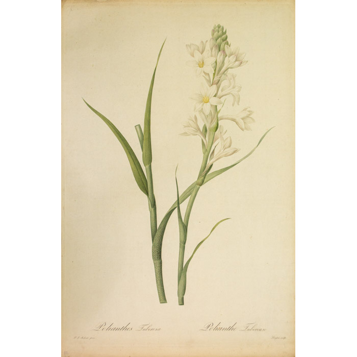

The Polianthes is a highly fragrant, summer-blooing herbaceous perennial bulb, native to Mexico and belonging to the Asparagaceae family. It is known for its intense, sweet, gardenia-like scent and is widely used in perfumery and as a cut flower. These plants have spikes of waxy, white, tubular flowers that grow 2-3 feet tall aobe grass-like foliage.
